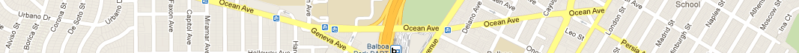

sfgazetteer.com

San Francisco: Alphabet City
Alphabets in San Francisco's Street Names
By Dave Schweisguth
(email: dave at schweisguth dot org)
Last updated Jan. 19, 2026
The San Francisco street grid is like a basket of cross-cut fries, each an
island of streets laid out at the same time, ragged at the edge where it runs
up against water or hills or an older neighborhood or a freeway. This is true
not just of the streets themselves but of their names. Each new survey or
subdivision named a swath of the city by some system or another, sometimes
interrupted here or there by a single older or newer name, sometimes obscured
altogether by a later mass renaming and barely visible at the bottom of the
historical basket.
The pressure of choosing many names all at once for a new neighborhood must
have been great. Even though the namers of nearly every section of San
Francisco relied on some theme or another -- pioneers, battles, universities,
the street names of other cities -- they sometimes had trouble coming up even
with an original theme. Successive surveyors repeatedly resorted to the "cheap
and indefensible expedient"1 of naming streets merely by number or
letter.
Though several rounds of renaming2 replaced some runs of numbered
or lettered streets with proper names, in some cases the original patterns can
still be detected. It would be too unnatural, when renaming numbered streets,
to leave behind one or a few old numbers amid the new names, and a single
letter would look silly in a grid of full words, but the letters -- which after
all are what make up words -- might stay around. In fact there are no less than
eleven complete or partial alphabets embedded in San Francisco's street
grid:
- San Francisco's best-known street alphabet is in the east-west streets of
the city's west side, from Anza in the Richmond District through the Sunset
to Yorba in the Parkside. It began as a plain alphabet to which was
assigned mostly Spanish historical names in the great renaming of 1909. The
renaming commission also chose two alphabets worth of names for the
numbered avenues, but this part of the plan was dropped except for the
renaming of First Avenue to Arguello and 49th Avenue to La Playa (one of a
few names in the western avenues for which the commission didn't want to
start a third alphabet).
- The same renaming turned the Bayview's numbered Avenues South (the
neighborhood's east-west streets) directly into alphabetized names, from
Arthur (at Islais Creek) to Yosemite, then Armstrong to Nelson and Olney on
land (Meade is now the farthest south street which remains from this
series) and Pulaski to Sampson in speculative "water streets". 6th Avenue
in the Hunter's Point Naval Shipyard, its only numbered street, must be
a survivor of this renaming, although it is ten blocks southwest of the
line of 6th Avenue South (now Fairfax). At the same time the lettered
north-south Streets South were renamed to Alvord (it and Boalt are gone,
but Coleman remains) through Upton.3
- The north-south streets of the streetcar suburb of Sunnyside, surveyed in
1890, were given an eclectic collection of mostly geographic names,
alphabetized from Acadia in the east to Hamburg (later renamed Ridgewood)
in the west.4
- In Visitacion Valley, Alpha and Delta Streets stand out as missing the
rest of their exotic alphabet. When the Reis Tract, the part of Vis Valley
north of Leland, was laid out in 1905, its north-south streets included
Alpha, Beta (now part of Rutland), Delta, Elliot (still present), Fay (now
part of Sawyer) and Going and Hamlin, which if they were ever built have
since been erased.5
- Even the few street names required for the Ingleside Terraces "residence
park" sent its surveyors fleeing to the inspiration of the alphabet: four
streets on its south edge are named Alviso, Borica, Corona and De
Soto.
- The Navy wasted no effort naming the streets in their San Francisco
outposts, giving the north-south streets of Treasure Island the letters B
through N and those in the Hunter's Point Naval Shipyard the letters A
through J, plus an unexpected R.
- And finally, a group of streets off of Owens Street in the city's newest
neighborhood, Mission Bay, carries on the tradition with the handful of
streets named A, B1, B2, B3 and C. They're not on San Francisco's
Department of Public Works maps6, and online map services vary
as to which if any exist, but recent fieldwork by Jef Poskanzer7
confirms that A, B, B3 and C streets are still in place.
That makes, if we count Arguello as a one-letter specimen and count the
east-west streets in the Bayview as two, no less than eleven alphabets, full or
partial or remnant, in San Francisco's street grid. Surely no other city can
boast so many. It would be easy to blame our hills, but I like to think that
our street names reflect our citizenry, as of course they must: practical when
necessary; in love with our past, but prone to experimentation and changing our
minds; and much given to decoration and ornamentation.
1
Freeman, John. "Street Naming Controversy - 1909".
In Encylopedia Of San Francisco.
2 Loewenstein, Louis K. Streets of San Francisco, 3e. Wilderness
Press, Berkeley, CA, April 1996.
3
Chevalier, August. The "Chevalier" Map of San Francisco. August Chevalier, San Francisco, CA, 1911.
In the David Rumsey Map Collection.
4
Sunnyside
District. Updated 27 March 2012.
On the Western Neighborhoods Project's
outsidelands.org.
5 Map of the Reis Tract. T.B. Potter Realty Co., June 21,
1905. In the collection of the Visitacion Valley History
Project.
6 City and
County of San Franciso Department of Public Works. Key Maps.
7 Poskanzer,
Jef. letter streets. May 15, 2012.
 The contents of this web site are licensed under a
Creative Commons Attribution-ShareAlike 3.0 Unported License.
The contents of this web site are licensed under a
Creative Commons Attribution-ShareAlike 3.0 Unported License.